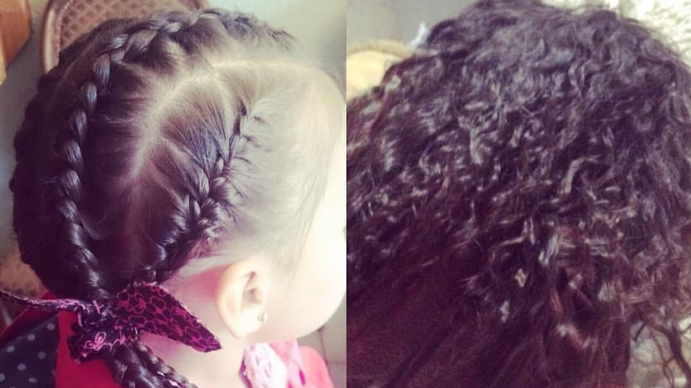

_Isabella_Bravo
Makeup Artist and Hairstylist
Bienvenida a visitar nuestro centro donde cada mujer es tratada con alta atención. Te daremos todo lo que tu belleza pueda necesitar.
Somos un centro cálido y acogedor con altors estándares de belleza y salud. Somos los mejores en lo que hacemos.
Galeria de imagenes
Nail Art
Hair Styling
Makeup
Certificación:
Con Certificación en, Pivot Point, Redken, PlusHair, Inoar,Eva Berndt, Fontboté y Organic nail.

Previous
Next